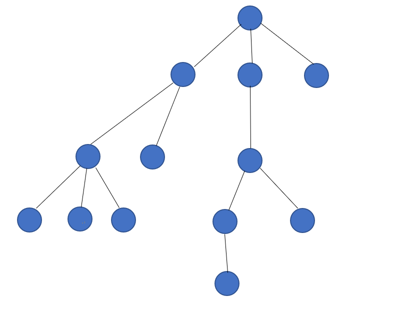
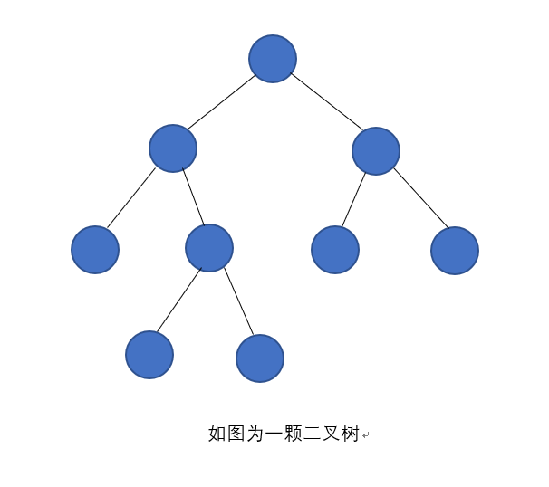
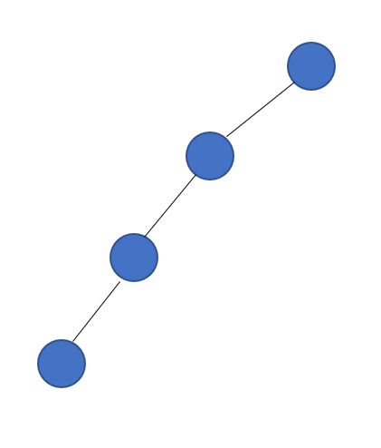
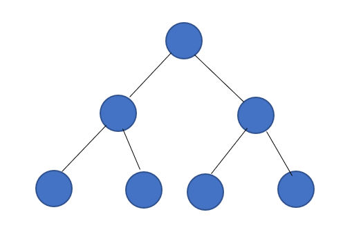
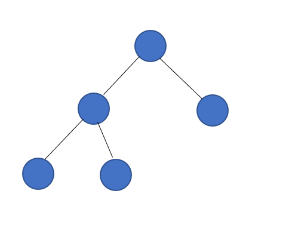
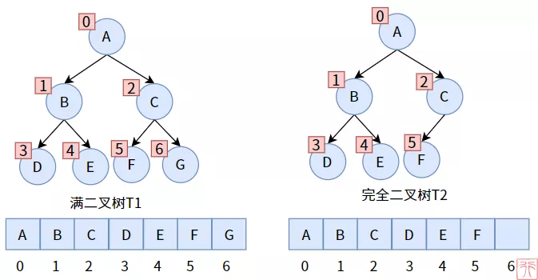
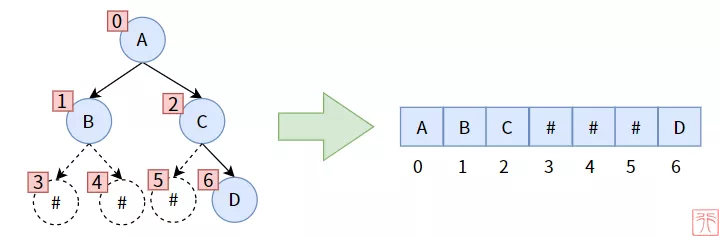
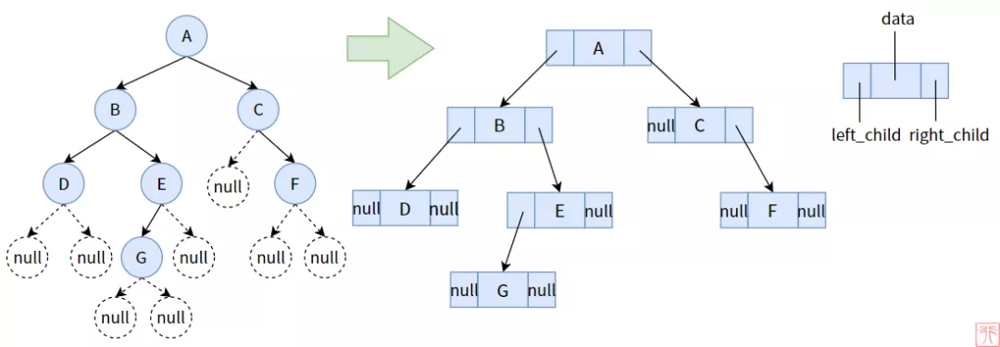
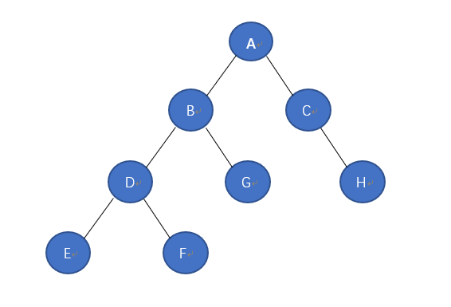

7.9.1.1. 数据结构之树
7.9.1.1.1. 树的概念
树是数据结构中的一种，其属于非线性数据结构的一种。树由结点和边组成，且不存在任何环的一种数据结构。

树的基本术语
术语 |
描述 |
节点的度 |
树中某个节点的子树的个数 |
树的度 |
树中各节点的度的最大值 |
分支节点 |
度不为0的节点 |
叶子节点 |
度为0的节点 |
孩子节点 |
某节点的后继节点 |
父节点 |
该节点为其孩子的父节点 |
兄弟节点 |
同一父节点的孩子节点互为兄弟节点 |
子孙节点 |
某节点所有子树中的节点 |
祖先节点 |
|
节点的层次 |
根节点为第一层(以此类推) |
树的高度 |
树中节点的最大层次 |
有序树 |
树中节点子树按次序从左向右排列，次序不能改变 |
无序树 |
与有序树相反 |
树的性值
树中节点数为节点度树加1(加根节点)
度为m的树中第i层最多有m^(i-1)个节点
高度为h的m次树至多有(m^h-1)/(m-1)个节点
具有n个节点的m次树的最小高度为logm(n(m-1)+1)向上取整
7.9.1.1.2. 二叉树
二叉树是n个节点的有限集合，该集合可以为空集(称为空二叉树)，或者由一个根节点和两棵互不相交的子树组成，分别称为根节点左子树和右子树

每一个节点中最多拥有一个左结点和右结点，并没有多余的结点，这是很明星的二叉树特征
二叉树特点
每个结点最多有两颗子树，所以二叉树中不存在度大于2的结点
左子树和右子树是有顺序的，次序不能任意颠倒
即使树中某结点只有一颗子树，也要区分它是左子树还是右子树
二叉树的性质
二叉树第i层上的结点数最多为2^(i-1)个结点
深度为k的二叉树最多有2^k-1个结点
包含n个结点的二叉树高度至少为log2(n+1)
在任意一颗二叉树中，若终端结点的个树为N0，度为2的结点为n2,则n0=n2+1
几种特殊的二叉树
斜树: 所有结点都只有左子树的二叉树叫左写树。相反的为右斜树

满二叉树: 在二叉树中所有分支结点都存在左子树和右子树，并且所有叶子结点都在同一层上，这样的二叉树称为满二叉树
满二叉树的特点有:
叶子结点只能出现在最下一层
非叶子结点的度一定是2
在同样深度的二叉树中，满二叉树的结点个树最多，叶子数最多

完全二叉树: 对一颗具有n个结点的二叉树按层编号，如果编号为i(1<=i<=n)的结点与同样深度的满二叉树中的编号为i的结点在二叉树中的位置完全相同，则这颗二叉树称为完全二叉树

7.9.1.1.3. 二叉树的存储
二叉树的存储可以有两种方式:顺序存储和链式存储
顺序存储
满二叉树

完全二叉树

非满、完全二叉树

这种存储的缺点是，数组中可能会有大量空间未使用，造成浪费
链式存储
链式存储则采用链表的方式进行数据存储。也是较为常见的存储方式

一颗二叉树的结点设计一定要有如下内容：
结点元素，data域，用来存储数据可以是int，char等基本类型，也可以是struct等复合数据类型
左孩子结点，left指针
右孩子结点，right指针
父结点(可选)，parent指针
struct node
{
int data;
struct node* left;
struct node* right;
};
struct Tree
{
struct node* root;
};
7.9.1.1.3.1. 树的创建
void insert(struct tree* t, int value)
{
struct node* node = (struct node*)malloc(sizeof(struct node));
node->data = value;
node->left = NULL;
node->right = NULL;
if(t->root == NULL)
{
t->root = node;
}
else
{
struct node* tmp = t->root;
while(tmp != NULL)
{
}
}
}
7.9.1.1.4. 二叉树的遍历
二叉树的遍历可以总结为以下三句话
先序遍历: 根左右
中序遍历: 左根右
后序遍历: 左右根
7.9.1.1.4.1. 先序遍历

这个二叉树的先序遍历访问顺序就是: ABDEFGCH
/* Pre-Traverse Binary-Tree */
static void Preorder_Traverse_BinaryTree(struct binary_node *node)
{
if (node == NULL) {
return;
} else {
printf("%d ", node->idx);
/* Traverse left child */
Preorder_Traverse_BinaryTree(node->left);
/* Traverse right child */
Preorder_Traverse_BinaryTree(node->right);
}
}
7.9.1.1.4.2. 中序遍历
这个二叉树的中序遍历访问顺序就是：EDFBGACH
/* Midd-Traverse Binary-Tree */
static void Middorder_Traverse_BinaryTree(struct binary_node *node)
{
if (node == NULL) {
return;
} else {
Middorder_Traverse_BinaryTree(node->left);
printf("%d ", node->idx);
Middorder_Traverse_BinaryTree(node->right);
}
}
7.9.1.1.4.3. 后序遍历
这个二叉树的后续遍历访问顺序就是: EFDGBHCA
/* Post-Traverse Binary-Tree */
static void Postorder_Traverse_BinaryTree(struct binary_node *node)
{
if (node == NULL) {
return;
} else {
Postorder_Traverse_BinaryTree(node->left);
Postorder_Traverse_BinaryTree(node->right);
printf("%d ", node->idx);
}
}